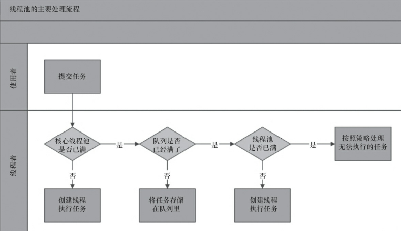
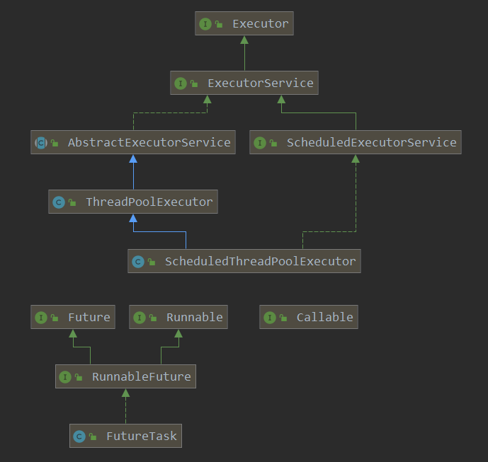

tips：这样的设计方案，可以避免频繁的线程创建，大部分的工作任务都会停留在第二步。
在 Java 中，线程池的知识是要从 Executor 框架展开。Executor 框架主要由三部分组成：
包括 Runnable 接口或 Callable 接口。Runnable 接口无返回值，Callable 有返回值。
// Runnable 和 Callable 都可以直接被 ThreadPoolExecutor 和 ScheduledThreadPoolExecutor 执行
Runnable runnable = () -> System.out.println(123);
// Executors 可以将 Runnable 转化成 Callable
Callable<Object> callable = Executors.callable(runnable);
Callable<String> success = Executors.callable(runnable, "success");包括任务执行机制的核心接口 Executor、继承自 Executor 的 ExecutorService 接口以及实现 ExecutorService 的 ThreadPoolExecutor 和 ScheduledThreadPoolExecutor。
ThreadPoolExecutor 是线程池的核心实现类，用来执行被提交的任务。其中 ThreadPoolExecutor 的原理就是上面介绍的线程池工作流程。
ScheduledThreadPoolExecutor 继承自 ThreadPoolExecutor ，可以在给定的延迟后执行任务，或者定期执行任务。
Executors 是创建 ThreadPoolExecutor 和 ScheduledThreadPoolExecutor 的工厂类。
static ExecutorService executorService = Executors.newFixedThreadPool(5);包括 Future 接口以及实现 Future 的 FutureTask 类。
// 执行 Runnable
executorService.execute(runnable);
// 执行 Callable
Future<Object> submit = executorService.submit(callable);
// Future 的 get 方法会阻塞线程直到完成
System.out.println(submit.get());
Future<String> future = executorService.submit(success);
System.out.println(future.get());当 FutureTask 处于未启动状态时，执行 FutureTask.cancel() 方法将导致此任务永远不会被执行；
当 FutureTask 处于已启动状态时，执行FutureTask.cancel（true）方法将以中断执行此任务线程的方式来试图停止任务；
当 FutureTask 处于已启动状态时，执行FutureTask.cancel（false）方法将不会对正在执行此任务的线程产生影响（让正在执行的任务运行完成）；
当 FutureTask 处于已完成状态时，执行FutureTask.cancel（）方法将返回false。
Executor 线程池的使用大抵如下，首先，我们需要创建 Runnable 或者 Callable 任务。然后通过 ThreadPoolExecutor.execute() 或者 ThreadPoolExecutor.submit() 把任务交给 ThreadPoolExecutor 容器执行。由 submit 提交的任务会返回 Future，表示线程执行的结果，其中 Future 的 get 方法会阻塞线程直到完成。
Executor框架的使用示意图如下：
